| |
|
|
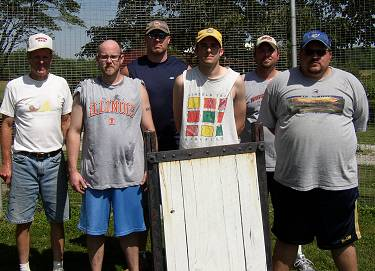
2009 Opening Day Teams (L-R): Tony Cork, Kevin Ryan, Lee Coakley, Jason
Atteberry and Paul Alf. |
Four-year old Caleb Cork continued his opening day first pitch streak throwing
out the season's first pitch for the fifth consecutive season. Younger brother
Jacob threw out his first opening day first pitch as well. |
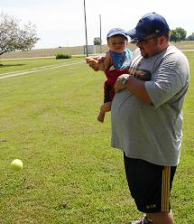
Payton Alf joined in on the first pitch fun throwing out the first of his
career. |
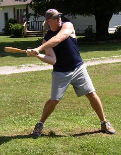
Lee Coakley made his chair baseball debut and led his team to the win goign
5-for-16 with 3 homeruns and 7 RBI. |
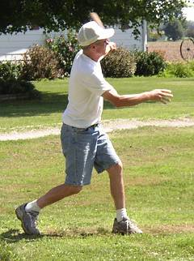
Tony Cork hit a homerun and went 7-for-15 in a losing effort. |
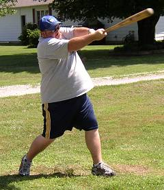
Paul Alf was 5-for-17 and scored 4 runs in the 15-9 victory. |
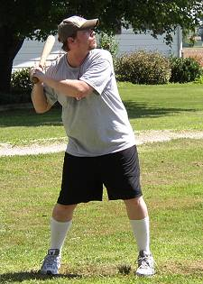
Jason Atteberry was 2-for-14 with a 2-run homerun in his
first career game. |
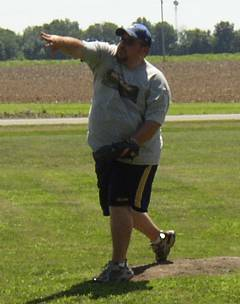
Paul Alf started on the mound and gave up 7 runs in 3 1/3 innings to move
his career ERA to 3.65 |
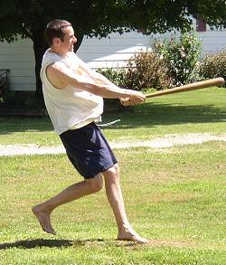
Patrick Cork had a game-high 8 hits in 16 at bats including 3 homeruns and
5 RBI. |
| 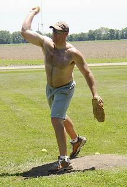
Lee Coakley came on in relief
and picked up his first
career win by pitching 4 2/3 innings and allowing just 2 runs. |
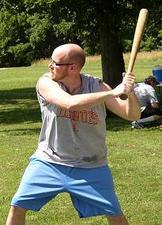
Kevin Ryan had a career day at
the plate going 7-for-15 with 3 homeruns and 6 RBI. |
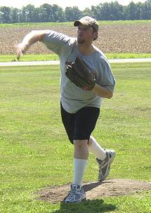
Jason Atteberry took the loss
allowing 7 earned runs in 7 innings in his pitching debut. |